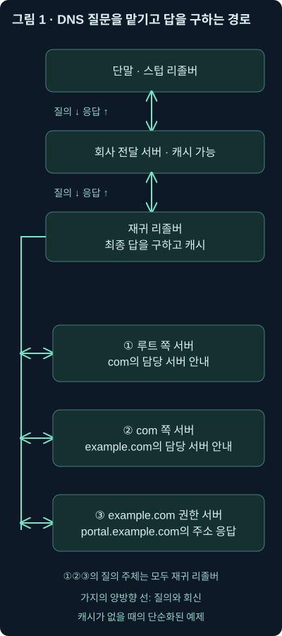
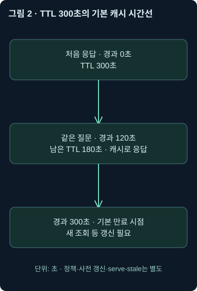
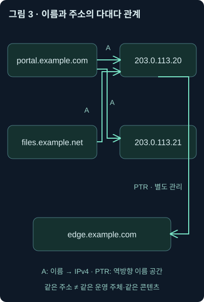
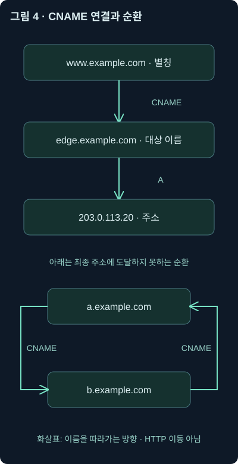

DNS의 동작 원리 — 이름에서 주소로, 응답에서 증거로
3강. DNS의 조회 경로·캐시·주요 레코드를 이해하고 질문과 응답을 패킷 증거와 연결합니다.
2강에서는 플로 기록, 애플리케이션 메타데이터, 패킷 원본을 연결하는 방법을 배웠습니다. 이제 그 기록에 자주 등장하는 DNS를 제대로 읽어볼 차례입니다. 어떤 이름을 물었고, 누가 대답했으며, 그 답으로 무엇을 판단할 수 있을까요?
이번 강의의 범위는 DNS의 필요성, 이름의 계층과 서버 역할, 조회 경로와 캐시, 주요 레코드, 패킷의 질문·응답 연결, 분석에서의 해석입니다. 공격 징후와 악용 방식의 상세 분석은 다음 강의에서 다룹니다.
아래 주소·도메인·레코드·패킷 표는 원리를 설명하기 위한 자체 예제입니다. 원본 실습 PCAP을 실행한 결과나 실제 인터넷의 현재 DNS 응답이 아닙니다. 문서용 주소와 예시 도메인을 사용하며, 예시 서버는 실제로 접속할 수 있는 실습 서버가 아닙니다. 최신 보충의 공식 문서 확인일은 2026년 11월 2일입니다.
1. 이름을 입력했는데, 컴퓨터는 어디로 접속할까요?
직원이 브라우저에 portal.example.com을 입력했다고 해봅시다. 사람에게는 기억하기 좋은 이름이지만, IP 네트워크에서 패킷을 전달하려면 목적지 IP 주소가 필요합니다. 이 이름에 관한 정보를 질의하고 답하는 체계가 DNS, 즉 Domain Name System입니다.
전화번호부를 떠올려보세요. 사람의 이름을 알고 있으면 전화번호를 찾아 전화할 수 있습니다. DNS도 이름을 통해 통신에 필요한 정보를 찾는다는 점에서 비슷합니다. 하지만 인터넷 전체의 정보를 담은 전화번호부 한 권이 있는 것은 아닙니다. 여러 관리자가 맡은 정보를 나누어 보관하고, 다른 담당자를 찾아가는 계층 구조를 사용합니다.
또 DNS가 IP 주소만 알려주는 것도 아닙니다. 메일을 어디로 보낼지, 어떤 서버가 이름 정보를 관리하는지, 서비스가 어느 포트에서 제공되는지 등도 찾을 수 있습니다. 이름뿐 아니라 어떤 종류의 정보를 원하는지 함께 질문해야 하는 이유입니다.
작은 예로 portal.example.com의 IPv4 주소를 물어 203.0.113.20이라는 응답을 받았다고 합시다. 그다음 브라우저가 그 주소로 웹 연결을 시도할 수 있습니다. 이름 조회와 실제 웹 접속은 서로 다른 통신입니다. DNS 응답을 받았다는 사실만으로 사이트에 접속하거나 파일을 받았다고 결론 내리면 안 됩니다.
반대로 웹 연결 전에 매번 새로운 DNS 패킷이 있어야 하는 것도 아닙니다. 이미 알아둔 답을 재사용하거나 기존 연결을 사용할 수 있습니다. 브라우저가 미리 이름을 조회할 수도 있고, 한 페이지가 광고·이미지·인증·분석 서비스의 여러 이름을 조회할 수도 있습니다. 따라서 DNS 질문 횟수를 웹 방문 횟수로 읽으면 어긋납니다.
2. 점으로 나눈 이름에는 관리 구조가 들어 있습니다
portal.example.com.을 오른쪽부터 읽어봅시다. 마지막 점 .은 DNS 이름 공간의 루트를 나타냅니다. 그 아래에 com, 그 아래에 example, 그 아래에 portal이라는 이름표가 이어집니다. 점 사이의 각 이름표를 레이블이라고 합니다.
끝의 점까지 포함해 루트에서부터 완전히 지정한 이름을 FQDN, 즉 완전한 도메인 이름이라고 부릅니다. 일상적인 화면에서는 마지막 점을 자주 생략하지만, 설정 파일에서는 상대 이름과 완전한 이름을 구분하는 데 중요합니다. com 같은 최상위 레이블을 TLD, 즉 최상위 도메인이라고 합니다.
여기서 도메인과 존(zone)을 구별해두면 뒤가 쉬워집니다. 도메인은 이름 트리의 한 부분이고, 존은 특정 권한 서버가 담당하는 관리 범위입니다. 하위 도메인을 다른 서버에 위임하면, 부모가 그 하위 이름의 모든 레코드를 직접 관리하는 구조가 아닙니다. 건물 관리실이 다른 입주 조직의 담당 부서까지 모두 직접 운영하지 않는 것과 비슷합니다.
DNS 레코드를 저장하는 방식을 설명할 때 존 파일이라는 말도 나옵니다. 존의 레코드를 텍스트로 표현한 설정 자료라고 이해하면 됩니다. 모든 운영 시스템이 반드시 텍스트 파일 하나로만 관리하는 것은 아닙니다. 관리 화면이나 데이터베이스에서 구성하더라도 논리적인 존과 레코드의 관계는 남습니다.
루트 서버는 모든 웹 서버의 주소를 담은 만능 서버가 아닙니다. 다음 담당자를 찾는 데 필요한 정보를 제공합니다. com의 담당 서버도 portal.example.com의 모든 업무 설정을 대신 관리하는 것이 아닙니다. 최종 답과 다음 담당자 안내를 구분하는 것이 계층 구조를 읽는 출발점입니다. DNS 용어 표준 RFC 9499
3. 내 컴퓨터, 전달 서버, 재귀 리졸버, 권한 서버는 무엇이 다를까요?
우리가 이름을 물을 때 컴퓨터가 바로 전 세계 서버를 돌아다니는 경우만 있는 것은 아닙니다. 보통은 지정된 DNS 서비스에 질문을 맡깁니다. 이 역할을 구별하는 이름부터 풀어보겠습니다.
리졸버(resolver)는 DNS 질문의 답을 구하는 구성 요소입니다. 그중 스텁 리졸버(stub resolver)는 대체로 다른 리졸버에 조회를 맡기는 단말 쪽 구성 요소입니다. 운영체제나 애플리케이션과 연결되며, 직접 인터넷의 위임 경로를 전부 따라가는 완전한 재귀 리졸버와는 구별됩니다.
전달 기능을 사용하는 리졸버는 필요한 질문을 지정한 상위 리졸버로 보냅니다. 예를 들어 회사 내부 DNS 서비스가 외부 이름의 질문을 다른 DNS 서비스로 넘길 수 있습니다. 내부 이름은 내부 권한 서버로, 외부 이름은 외부 리졸버로 보내는 조건부 전달도 가능합니다.
재귀 리졸버는 클라이언트를 대신해 최종 답을 구해주는 서비스를 제공합니다. 필요한 경우 다른 서버를 단계별로 질의하고, 얻은 답을 캐시에 보관합니다. 캐시는 다음에 재사용하려고 임시로 저장해둔 정보입니다. 이미 유효한 답이 있으면 매번 처음부터 찾지 않아도 됩니다.
권한 서버(authoritative server)는 자신이 담당하는 존의 데이터로 답하는 서버입니다. 그 존의 원천 데이터에 근거한다는 뜻이지, 인터넷 전체에 대해 모든 답을 알고 있다는 뜻은 아닙니다. 하위 존을 위임했다면 그 경계도 고려해야 합니다.
| 역할 | 주로 하는 일 | 분석에서 확인할 점 |
|---|---|---|
| 스텁 리졸버 | 다른 리졸버에 이름 조회를 맡김 | 단말이 어떤 DNS 서비스로 보냈나? |
| 전달 기능 | 질문을 지정한 상위 서비스로 넘김 | 전달 전후의 주소와 기록을 연결할 수 있나? |
| 재귀·캐싱 리졸버 | 답을 구하고 캐시해 클라이언트에 제공 | 캐시 응답인가, 외부 조회가 필요했나? |
| 권한 서버 | 담당 존의 데이터로 응답 | 어떤 존과 이름에 대해 권한이 있는가? |
이 표를 제품별로 고정된 네 상자로 생각하지는 마세요. 한 프로그램이 전달·캐시·권한 기능을 함께 제공할 수도 있고, 설정한 이름에 따라 역할이 달라질 수도 있습니다. 클라이언트에게 재귀 서비스를 제공하면서 실제 외부 조회는 상위 리졸버에 맡길 수도 있습니다. 캐싱과 전달은 서로 배타적인 제품 종류가 아니라 동작 특성입니다.
이 구별은 교재의 설명을 보충해야 하는 부분입니다. 스텁을 완전한 재귀 서버와 동일하게 취급하거나, 권한 서버라는 제품은 어떤 구성에서도 캐시 기능을 가질 수 없다고 단정하면 실제 환경을 잘못 읽게 됩니다. RFC 9499의 리졸버·전달·권한 용어
4. 캐시에 답이 없다면 누가 다음 담당자를 찾아갈까요?
다음 예에서는 직원 컴퓨터가 회사의 전달 서버를 거쳐 재귀 리졸버에 질문을 맡깁니다. 필요한 답과 위임 정보가 캐시에 없다고 가정하겠습니다. 설명에 나오는 존의 데이터와 주소는 가상입니다.
직원 컴퓨터가 묻습니다. “portal.example.com의 A 레코드를 알려주세요.” A는 IPv4 주소를 묻는 레코드 종류입니다. 회사 전달 서버도 답이 없으면 상위 재귀 리졸버에 요청합니다.
재귀 리졸버는 먼저 루트 쪽에서 com을 담당하는 서버의 안내를 얻습니다. 그다음 com 쪽에서 example.com의 권한 서버 안내를 얻습니다. 마지막으로 해당 권한 서버에 원하는 이름과 종류를 물어 주소를 얻습니다. 다음 서버를 찾아가며 답을 모으는 주체는 이 예에서는 재귀 리졸버입니다.

그림의 녹색 아래 방향은 요청이 맡겨지는 관계이고, 오른쪽 가지는 재귀 리졸버가 담당 서버들에 질의하는 관계입니다. 가지의 양방향 선은 질의와 회신입니다. 루트가 질문을 TLD 서버에 직접 전달하고 TLD가 다시 웹 서버까지 전달한다는 그림이 아닙니다. 답을 얻으면 재귀 리졸버에서 전달 서버를 거쳐 단말로 돌아옵니다.
이때 클라이언트가 “최종 답까지 구해달라”고 맡기는 방식을 재귀 질의라고 설명합니다. 반면 담당자를 차례로 안내받아가는 과정은 반복 질의의 관점에서 이해할 수 있습니다. 같은 조회 전체 안에서도 역할과 구간이 다릅니다.
물론 실제 조회가 매번 루트부터 시작하지는 않습니다. 권한 서버 위치를 캐시했거나 최종 답을 이미 알고 있다면 일부 단계를 건너뜁니다. 시작할 때 사용할 루트 서버 정보도 필요합니다. 이를 제공하는 초기 정보가 루트 힌트 등입니다.
또 현재의 리졸버는 개인정보 노출을 줄이기 위해 상위 서버에 매번 전체 이름을 보내지 않고 필요한 부분만 묻는 QNAME 최소화를 사용할 수 있습니다. QNAME은 질의 대상 이름입니다. 따라서 교육용 전체 이름 조회 그림과 실제 패킷의 질문 이름이 다르다는 이유만으로 오류나 공격이라고 판단하면 안 됩니다. RFC 9156
5. TTL과 캐시: 같은 이름을 물어도 매번 패킷이 같지 않습니다
권한 서버의 응답에 다음 A 레코드가 있었다고 합시다.
portal.example.com. 300 IN A 203.0.113.20이 줄은 패킷 원문이 아니라 레코드를 읽기 쉽게 적은 자체 예제입니다. 이름 뒤의 300은 DNS TTL이며 단위는 초입니다. IN은 인터넷 클래스, A는 IPv4 주소 레코드, 마지막 값은 주소입니다. TTL은 Time To Live의 약자로, 기본적으로 레코드를 캐시에 재사용할 시간을 나타냅니다. 300초는 5분입니다.
10:00:00에 300초짜리 답을 받았고 10:02:00에 같은 질문이 들어왔다면, 단순한 조건에서 남은 캐시 시간은 다음과 같습니다.
300초 - 120초 = 180초캐시에서 바로 답하면 권한 서버로 새 질의를 보내지 않아도 됩니다. 단말까지 캐시를 갖고 있다면 단말 밖으로 질의가 나가지 않을 수도 있습니다. 2강에서 배운 “검색 결과가 없을 때 관측 조건을 확인한다”는 원칙이 여기에도 적용됩니다.

이 그림은 처음 응답을 받은 시점을 0초로 둔 단순 시간선입니다. TTL은 초 단위이며, 각 단계의 캐시가 독립적으로 동작할 수 있습니다. DNS TTL을 IP 헤더의 TTL과 혼동하지 마세요. IP TTL은 전달 홉 제한과 관련되고 DNS 레코드 TTL은 캐시 재사용 시간과 관련됩니다.
캐시가 만료되면 정상적인 새 조회가 필요하지만, 구현과 설정에 따라 미리 갱신하거나 장애 때 만료된 정보를 제한적으로 제공하는 serve-stale 동작도 있습니다. 따라서 TTL을 “이 초가 지나면 세상 모든 캐시에서 반드시 즉시 사라진다”는 전역 시한으로 이해하면 안 됩니다. RFC 8767
없는 이름이라는 응답도 일정 조건에서 캐시할 수 있습니다. 이를 부정 응답 캐싱이라고 합니다. 이름 자체가 없다는 NXDOMAIN과, 이름은 있지만 요청한 종류의 데이터가 없다는 상황은 구별해야 합니다. 뒤의 경우는 NOERROR와 빈 답 등으로 나타날 수 있습니다. 실패처럼 보이는 응답을 모두 “서버에 연결하지 못했다”로 묶지 마세요. 부정 응답 캐싱 RFC 2308
6. A와 AAAA: 이름과 주소를 연결하되 하나로 고정하지 않습니다
A 레코드는 IPv4 주소, AAAA 레코드는 IPv6 주소를 담습니다. 같은 이름에 두 종류가 함께 있을 수도 있고, 하나만 있을 수도 있습니다. IPv6 예제에서는 문서용 범위 2001:db8::/32의 주소를 사용합니다.
portal.example.com. 300 IN A 203.0.113.20
portal.example.com. 300 IN A 203.0.113.21
portal.example.com. 300 IN AAAA 2001:db8::20이 예에서 A 질의의 답은 IPv4 주소 두 개일 수 있습니다. AAAA 질의는 별도의 종류를 묻는 질문입니다. 한 이름에 주소가 여러 개라는 사실 자체는 이상 징후가 아닙니다. 서비스 분산과 가용성 등을 위해 사용될 수 있습니다. 클라이언트가 실제로 어느 주소를 선택했는지는 뒤의 연결을 확인해야 합니다.
이름을 조회할 때 관심 있게 볼 항목은 질문 이름, 질문 종류, 응답 상태, 답에 포함된 각 레코드, TTL입니다. 여기에 패킷 바깥쪽의 출발지·목적지 IP와 포트를 함께 봅니다. DNS 메시지의 질문 이름과 IP 헤더의 목적지 주소는 다른 역할입니다.
예를 들어 목적지 IP가 192.0.2.53이라면 이 구간에서 DNS 질문을 받은 서버 주소입니다. DNS 답의 203.0.113.20은 질의 결과로 알려준 주소입니다. “DNS 서버의 주소”와 “접속하려는 업무 서버의 주소”를 서로 바꾸어 적으면 조사 흐름이 틀어집니다.
또 관측 지점이 회사 전달 서버의 바깥쪽이면 출발지 IP가 직원 컴퓨터가 아니라 전달 서버일 수 있습니다. 외부 센서에서 보인 주소 하나로 최초 질문한 직원을 확정하지 말고, 내부 리졸버 기록과 당시 단말 정보를 대조해야 합니다.
7. 응답은 어떻게 찾을까요? 거래 ID만으로는 부족합니다
DNS 메시지에는 질문과 응답을 연결할 때 쓰는 16비트 거래 ID, 또는 트랜잭션 ID가 있습니다. 예를 들어 질의에 0x4101을 넣었다면 관련 응답도 그 값을 사용합니다. 0x는 뒤의 수를 16진수로 적었다는 표시입니다.
하지만 16비트 값은 재사용되고, 동시에 여러 단말이 같은 값을 쓸 수 있습니다. 따라서 ID가 같다는 이유만으로 전혀 다른 두 패킷을 짝지으면 안 됩니다. 같은 관측 구간에서 주소·포트·전송 방식·질문 이름과 종류·시간을 함께 확인해야 합니다. 중간 전달 서버가 새로운 상위 질의를 만들면 구간별 ID가 달라질 수도 있습니다.
| 필드·정보 | 읽는 의미 | 주의할 점 |
|---|---|---|
| QNAME·QTYPE | 무엇에 관한 어떤 종류의 질문인가? | 같은 이름이라도 A와 AAAA는 다른 질문 |
| ID | 해당 구간의 질문·응답을 연결하는 값 | 전 세계적으로 고유한 식별자가 아님 |
| QR | 질의인지 응답인지 표시 | 일반 질의 0, 응답 1 |
| RD | 클라이언트가 재귀 처리를 원함 | 이것만으로 재귀 처리 성공을 보장하지 않음 |
| RA | 응답 서버가 재귀 기능을 제공함 | 응답을 어디서 얻었는지까지 말하지 않음 |
| AA | 관련 답에 대한 권한 응답 표시 | 결과가 안전한 사이트라는 인증이 아님 |
| RCODE | 응답 상태 코드 | NXDOMAIN, SERVFAIL 등을 구분 |
| 외부 IP·포트·시간 | 이 구간에서 누가 누구와 통신했나? | 전달·주소 변환·센서 위치 확인 |
응답은 크게 헤더와 Question, Answer, Authority, Additional 같은 부분으로 읽습니다. Question은 질문, Answer는 답, Authority는 권한·위임 관련 정보, Additional은 해석에 필요한 추가 정보를 담을 수 있습니다. 모든 응답에서 모든 부분이 반드시 채워지는 것은 아닙니다.
일반적인 UDP DNS에서는 클라이언트의 임시 포트에서 서버 53번으로 질문하고 반대 방향으로 응답합니다. 그러나 DNS는 TCP도 사용합니다. 응답이 잘렸다는 TC 표시와 TCP 재시도, 암호화된 DNS 등의 조건도 있습니다. UDP 53만 보았다는 사실을 DNS 전체를 관측했다는 뜻으로 읽으면 안 됩니다. 기본 메시지 구조와 ID·플래그는 RFC 1035, TCP 사용은 RFC 7766을 함께 참고하세요.
8. 이름과 주소는 다대다 관계이며 시간에 따라 바뀝니다
한 이름은 여러 주소를 가리킬 수 있습니다. 반대로 서로 다른 이름이 같은 주소를 가리킬 수도 있습니다. 어떤 이름은 주소 레코드 없이 다른 종류의 정보만 가질 수도 있습니다.
예를 들어 portal.example.com과 files.example.net이 둘 다 203.0.113.20을 가리킨다고 합시다. 공유 서버나 공통 전달 서비스일 수도 있습니다. 더 나아가 다른 이름의 관리자가 자신과 관계없는 주소를 A 레코드에 넣는 것도 기술적으로 가능합니다. 레코드를 만들 수 있다는 사실이 그 서버를 소유하거나 내용을 바꿀 권한이 있다는 뜻은 아닙니다.

그림의 A 화살표는 이름에서 IPv4 주소로의 대응이고, PTR 화살표는 반대 이름 공간의 독립적인 대응입니다. 가운데 주소가 같다는 이유만으로 왼쪽 이름들의 운영 주체나 콘텐츠가 같다는 결론이 나오지 않습니다.
조건을 추가해보겠습니다. 의심스러운 이름이 유명 서비스의 공유 주소를 가리켰다고 합시다. 그 주소를 즉시 차단하면 관련 없는 정상 서비스를 함께 막을 수 있습니다. 과거 위협 정보에 등장한 이름과 주소의 관계가 조사 시점에도 그대로였는지도 확인해야 합니다.
그래서 기록할 때는 이름과 IP만 쓰지 않고 관측 시각, 질문 종류, 실제 응답, 질문한 리졸버와 관측 위치를 함께 남깁니다. 지금 새로 조회한 답은 현재의 조회 결과이고, 과거 패킷의 답은 그때 그 경로에서 관측한 결과입니다. 현재 조회로 과거 결과를 덮어쓰지 마세요.
9. PTR: 주소에서 이름을 찾지만 소유자 증명서는 아닙니다
이름에서 주소를 찾는 것과 반대로, 주소에 대응하는 이름을 묻는 데 PTR 레코드를 사용합니다. IPv4의 역방향 질의에서는 주소의 네 숫자 순서를 뒤집어 특별한 이름 공간에 넣습니다.
확인할 IPv4 주소: 203.0.113.20
질문할 이름: 20.113.0.203.in-addr.arpa.
질문 종류: PTR
예시 답: edge.example.com.왜 뒤집을까요? DNS 이름은 오른쪽의 상위 관리 범위에서 왼쪽으로 세부 이름을 찾아갑니다. 주소를 역순으로 배치하면 주소 대역 관리에 맞춰 위임할 수 있습니다. in-addr.arpa는 이 용도의 별도 이름 공간입니다. 정방향 존 파일에 A 레코드를 추가했다고 역방향 PTR이 자동으로 생기는 것은 아닙니다.
작은 주소 대역의 역방향 위임에는 CNAME을 활용하는 방식도 있습니다. 모든 PTR 조회가 항상 그런 구성을 사용하는 것은 아니며, 필요할 때 RFC 2317의 방식을 참고합니다. IPv6 역방향은 ip6.arpa에서 주소를 16진수 한 자리씩 뒤집어 표현합니다. IPv4처럼 네 묶음만 뒤집는 방식이 아닙니다. IPv6 DNS RFC 3596
이제 portal.example.com을 정방향으로 조회해 203.0.113.20을 얻고, 그 주소의 PTR에서 edge.example.com을 받았다고 합시다. 두 이름이 다르다는 이유만으로 DNS 오류나 공격이 되는 것은 아닙니다. 여러 이름이 같은 주소를 사용할 수 있기 때문입니다.
PTR의 이름을 다시 A·AAAA로 조회했을 때 원래 주소가 포함되는지 확인하는 것을 정방향 확인 역방향 DNS, 흔히 FCrDNS라고 부릅니다. 이 확인도 모든 최초 별칭을 복구하거나 서비스의 선량함을 증명하지는 않습니다. 역방향 존을 관리하는 쪽이 설정한 이름이라는 맥락에서 읽어야 합니다. 운영 권고 RFC 1912
10. TXT: 텍스트를 담지만 전체가 255글자로 끝나는 것은 아닙니다
TXT 레코드는 이름에 문자열 정보를 연결합니다. 도메인 확인 토큰이나 이메일 인증 정책 등 다양한 용도로 사용됩니다. 하나의 이름에 서로 다른 용도의 TXT 레코드가 여러 개 있을 수 있습니다.
example.com. 300 IN TXT "site-verification=demo-token"이것은 서비스가 제시한 값을 DNS에 넣을 수 있는지를 확인하는 예시입니다. 해당 DNS 영역을 제어한다는 단서이지 모든 상황에서 법적 소유권까지 증명하는 만능 절차는 아닙니다.
여기서는 오래된 설명을 정확히 수정해야 합니다. DNS의 TXT 데이터는 하나 이상의 character-string으로 구성됩니다. 각 문자열의 데이터 길이는 최대 255옥텟입니다. 옥텟은 8비트, 여기서는 한 바이트입니다. TXT 레코드 전체가 무조건 255글자라는 뜻이 아니며, 문자 인코딩에 따라 글자 수와 바이트 수도 다릅니다. 기본 형식 자체를 “출력 가능한 ASCII만 허용”이라고 일반화하는 것도 정확하지 않습니다. 특정 용도의 규격이나 서비스가 별도 제한을 둘 수는 있습니다. RFC 1035의 TXT 형식
출력 화면에서 "앞부분" "뒷부분"처럼 보이면 하나의 레코드 안에 여러 문자열이 있는 것인지, 별도 레코드가 여러 개 있는 것인지 구별해야 합니다. 어떤 용도는 같은 레코드의 문자열들을 이어 해석합니다. 키=값 표현은 일부 용도에서 유용하지만 모든 TXT의 필수 문법은 아닙니다.
SPF는 어떤 발신 서버를 허용하는지 확인하는 정책입니다
SPF는 Sender Policy Framework입니다. 수신 메일 시스템이 전송자의 IP 등이 특정 도메인의 발송 정책에 맞는지 확인하는 데 사용합니다. 실제 정책은 메일 전송에 쓰는 발신 도메인이나 HELO 식별 등을 대상으로 하며, 화면의 From 주소만 검증하는 것으로 단순화하면 안 됩니다.
example.com. 300 IN TXT "v=spf1 ip4:192.0.2.25 -all"이 가상 예제에서 v=spf1은 SPF 버전 표시입니다. 교재의 spf=처럼 기억하면 실제 레코드를 잘못 읽을 수 있습니다. ip4:192.0.2.25는 해당 IPv4 주소를 검사하는 메커니즘이고, 끝의 -all은 앞의 허용 조건에 맞지 않는 나머지에 실패 결과를 주는 조건입니다. 수신 시스템의 최종 처리까지 이 한 줄이 모두 결정하는 것은 아닙니다. 같은 도메인의 다른 TXT와 SPF 정책을 구별하고, 여러 SPF 정책 레코드를 임의로 중복 배치하지 않아야 합니다. SPF RFC 7208
DKIM은 개인키로 서명하고 공개키로 검증합니다
DKIM은 DomainKeys Identified Mail입니다. 송신 측은 개인키로 메일의 지정 부분에 서명하고, 수신 측은 DNS에서 찾은 공개키로 서명을 검증합니다. 개인키와 공개키는 서로 다른 역할을 하는 암호 키 쌍입니다. 공개키로 메일을 서명한다는 설명은 바로잡아야 합니다.
공개키는 예를 들어 demo._domainkey.example.com 같은 이름의 TXT에 게시됩니다. demo 같은 선택자를 셀렉터라고 하며, 메일에 있는 서명 정보와 함께 키를 찾는 데 사용합니다. 서명이 검증돼도 메일 내용이 무해하거나 사용자가 표시한 이름이 모두 진짜라는 보장은 없습니다. DNSSEC나 메일의 다른 인증·정책과도 역할이 다릅니다. DKIM RFC 6376
TXT에는 공격자가 이용할 수 있는 데이터 운반 가능성도 있습니다. 그러나 TXT 질의라는 이유만으로 악성으로 분류하지 마세요. 정상 정책 조회와 악용의 구별은 다음 강의에서 질문 길이·빈도·응답·프로그램 문맥과 연결합니다.
11. CNAME: 이름의 별칭이며 웹 주소 이동 명령은 아닙니다
여러 서비스 이름을 하나의 실제 대상 이름으로 관리하고 싶다고 해봅시다. CNAME은 별칭 이름을 다른 정규 이름, 즉 canonical name에 연결하는 레코드입니다.
www.example.com. 300 IN CNAME edge.example.com.
edge.example.com. 300 IN A 203.0.113.20첫 줄의 별칭은 www.example.com이고, 정규 대상 이름은 오른쪽의 edge.example.com입니다. CNAME은 IP 주소를 담는 레코드가 아닙니다. 주소가 필요하면 대상 이름의 A나 AAAA를 이어 확인합니다. 응답에 CNAME과 최종 주소가 함께 있을 수도 있고, 추가 질의가 필요할 수도 있습니다.

그림 위쪽에서는 별칭에서 대상 이름을 거쳐 주소에 도달합니다. 아래쪽은 두 별칭이 서로를 가리켜 최종 답을 얻지 못하는 잘못된 구성입니다. 선의 방향은 이름을 따라가는 방향입니다.
CNAME을 “리다이렉트”라고만 외우면 HTTP의 301·302 같은 웹 리다이렉트와 혼동하기 쉽습니다. DNS CNAME은 이름 해석 단계의 관계이며, 브라우저 주소창의 URL을 바꾸라는 HTTP 응답이 아닙니다. HTTP의 Host나 TLS의 대상 이름 같은 다른 맥락도 그대로 중요합니다.
유한한 CNAME 체인 자체는 사용할 수 있습니다. 다만 단계가 늘면 추가 질의와 장애 의존성이 생길 수 있고, 순환하면 해석이 실패합니다. 별칭을 만드는 이름에 다른 일반 데이터를 함께 두는 데도 제약이 있으므로, 특히 존의 꼭대기에 CNAME을 두는 문제는 SOA·NS와 함께 검토해야 합니다. DNS 기본 개념 RFC 1034
12. MX: 메일을 받을 서버의 이름을 찾습니다
직원이 user@example.com으로 메일을 보낸다고 합시다. 인터넷으로 메일을 전달하는 서버는 보통 example.com의 MX 레코드로 수신 서버를 찾습니다. MX는 Mail Exchange의 약자입니다.
example.com. 300 IN MX 10 mail1.example.com.
example.com. 300 IN MX 20 mail2.example.com.
mail1.example.com. 300 IN A 192.0.2.25
mail1.example.com. 300 IN AAAA 2001:db8::25MX의 10과 20은 포트 번호가 아니라 선호도 값입니다. 숫자가 작은 쪽을 먼저 선호합니다. 다른 조건이 적절하다면 mail1을 먼저 시도하고, 상황에 따라 다른 대상도 시도할 수 있습니다. 값이 같으면 같은 선호도 그룹이며, “큰 숫자가 더 강한 서버”라는 뜻은 아닙니다.
MX가 알려준 값은 서버 이름입니다. 전송 서버는 그 이름의 주소를 구하고 SMTP 연결로 메일을 전달합니다. 앞에서 배운 DNS 질문과 실제 연결이 분리되는 또 하나의 예입니다. MX 조회가 관측됐다는 사실만으로 메일 본문까지 전송됐다고 판단할 수는 없습니다.
현재 설명에서는 MX 대상을 A 레코드만 가능한 것으로 제한하지 않습니다. 대상 서버는 A 또는 AAAA 주소를 가질 수 있으며, MX 교환 대상이 CNAME 별칭이어서는 안 된다는 제약과 구별해야 합니다. 교재의 오래된 RFC 974 인용 대신 이 부분은 SMTP RFC 5321의 주소 해석 설명으로 보충합니다.
예외도 있습니다. MX가 없을 때 주소 레코드에 대한 암시적 MX 처리가 적용될 수 있지만, 어떤 DNS 오류든 같은 의미가 되는 것은 아닙니다. 또 MX 0 .이라는 Null MX는 그 도메인이 메일을 받지 않는다는 명시적 표시입니다. 여기의 점은 메일 서버 이름을 생략한 오타가 아닙니다. Null MX RFC 7505
13. SRV: 서비스의 서버 이름과 포트까지 찾습니다
클라이언트가 “이 도메인의 디렉터리 서비스는 어느 서버, 어느 포트에 있나요?”라고 묻고 싶을 수 있습니다. 이때 SRV 레코드가 사용될 수 있습니다. 특히 Active Directory 같은 환경의 서비스 탐색에서 자주 만납니다. LDAP는 디렉터리 정보를 조회·관리하는 데 쓰는 프로토콜입니다.
_ldap._tcp.example.com. 300 IN SRV 10 60 389 dc1.example.com.
_ldap._tcp.example.com. 300 IN SRV 10 40 389 dc2.example.com.이름의 _ldap은 서비스, _tcp는 전송 프로토콜, 뒤의 example.com은 대상 도메인입니다. 앞의 밑줄은 서비스용 이름을 보통의 호스트 이름과 구별하는 규칙의 일부입니다. 밑줄이 보인다는 이유만으로 난독화나 악성 도메인이라고 판단하지 마세요.
SRV 뒤의 네 값은 순서대로 우선순위, 가중치, 포트, 대상 서버입니다. 우선순위는 작은 값이 먼저입니다. 같은 우선순위에서는 가중치를 이용해 대상을 선택하도록 정의됩니다. 예제의 60과 40은 상대적인 선택 가중치이지 네트워크 대역폭이나 영구적인 접속 비율 보장 값은 아닙니다. 389는 예제 서비스 포트입니다. 대상 이름은 별도의 주소 해석이 필요합니다. SRV RFC 2782
이 레코드는 내부 서비스에만 쓸 수 있는 것은 아닙니다. 공개 서비스에도 사용할 수 있습니다. 다만 내부 조직의 디렉터리 서버 구조를 외부에 공개할지는 별도의 설계·노출 판단입니다. 레코드 형식의 기능과 내부 정보 노출 정책을 구분해야 합니다.
14. NS와 글루: 담당 서버의 이름을 알았는데 그 주소는 어디서 구할까요?
NS 레코드는 존을 담당하는 권한 서버의 이름을 나타냅니다. NS 값에 IP 주소를 그대로 넣는 레코드가 아닙니다.
example.com. IN NS ns1.example.com.
ns1.example.com. IN A 192.0.2.53위 예에서 example.com의 담당 서버가 ns1.example.com이라는 것을 알아도 실제 질의를 보내려면 그 이름의 주소가 필요합니다. 그런데 그 주소도 같은 존 안에 있다면 어떨까요? 담당 서버를 찾으려면 담당 서버부터 찾아야 하는 순환 의존이 생길 수 있습니다.
이런 부트스트랩 문제를 해결하기 위해 부모가 필요한 주소 정보를 글루(glue)로 제공할 수 있습니다. 부트스트랩은 시작에 필요한 최소 정보를 먼저 마련하는 뜻입니다. 글루는 부모 쪽의 위임을 따라가기 위한 주소 정보이며, 아무 추가 정보나 모두 같은 수준으로 신뢰하면 된다는 뜻은 아닙니다.
NS는 두 위치에서 마주칠 수 있습니다. 부모 존에는 “이 하위 존은 이 서버가 담당한다”는 위임 정보가 있고, 자식 존의 꼭대기에는 자신의 권한 서버 목록이 있습니다. 같은 운영 관계를 반영해야 하지만 서로 다른 위치의 데이터이므로 설정 변경 때 맞지 않을 수도 있습니다. 도메인 등록기관에 지정하는 네임서버와 실제 존 안의 NS를 별도로 관리한다는 의미가 여기서 나옵니다.
또 NS가 목록에 있다는 사실만으로 그 서버가 올바른 데이터로 답하고 접근 가능한 것까지 보장하지는 않습니다. 위임과 실제 권한 응답의 불일치, 주소 도달성, 캐시된 옛 위임을 함께 살펴야 합니다. “루트나 TLD가 모든 이름의 최종 주소를 다 갖고 있다”는 해석과도 다릅니다. DNS 개념·위임 RFC 1034
15. SOA와 NULL을 포함해 레코드 종류를 한 번 정리합니다
레코드 종류에는 숫자 코드가 있습니다. 분석 화면에서 이름으로 보일 때도 있고 숫자로 보일 때도 있으므로 대응표를 곁에 두면 편합니다. 다만 숫자를 암기하는 것보다 실제 질문의 목적과 답의 데이터 형식을 이해하는 것이 먼저입니다.
| 종류 | 코드 | 데이터·목적 |
|---|---|---|
| A | 1 | IPv4 주소 |
| NS | 2 | 권한 네임서버 이름 |
| CNAME | 5 | 별칭의 정규 대상 이름 |
| SOA | 6 | 존의 관리·갱신 관련 기본 정보 |
| NULL | 10 | 실험적 용도로 정의된 데이터 레코드 |
| PTR | 12 | 다른 이름을 가리키는 포인터; 역방향 조회에서 사용 |
| MX | 15 | 메일 교환 대상 이름과 선호도 |
| TXT | 16 | 하나 이상의 문자열 |
| AAAA | 28 | IPv6 주소 |
| SRV | 33 | 서비스의 우선순위·가중치·포트·대상 이름 |
SOA는 Start of Authority입니다. 존의 주 서버 관련 이름, 관리 연락처 표현, 일련번호, 갱신·재시도·만료 관련 값 등을 담습니다. SOA의 MINIMUM 필드는 현재 부정 응답 캐싱과 연결해 읽어야 하며, 모든 긍정 레코드의 TTL을 하나로 강제하는 값으로 단순화하지 않습니다.
NULL은 이름 그대로 “아무 DNS 응답이 없었다”는 상태를 뜻하지 않습니다. 레코드 종류 이름입니다. 여기서는 상세 악용이나 설치 방법보다 종류와 결과 코드를 혼동하지 않는 것을 목표로 합니다. 종류 번호와 기본 데이터 형식은 RFC 1035, AAAA는 RFC 3596을 참고합니다.
16. 조회 도구와 로컬 캐시를 살펴보는 방법
명령 예시는 형식을 설명하기 위한 것입니다. 이 강의를 작성하면서 실제 DNS 질의를 실행하거나 단말 캐시를 수집한 것은 아닙니다. 예시 서버 192.0.2.53은 문서용 주소이므로 그대로 실행해 정상 응답을 기대하면 안 됩니다.
nslookup -type=A portal.example.com 192.0.2.53nslookup은 조회 도구, -type=A는 IPv4 주소 종류, portal.example.com은 질문 이름, 마지막 주소는 질의를 보낼 DNS 서버입니다. 마지막 주소를 생략하면 도구가 선택한 기본 서버를 사용합니다. 출력 위쪽의 Server·Address는 사용한 DNS 서버일 수 있으므로 답의 이름·주소와 구분해야 합니다.
nslookup 203.0.113.20 192.0.2.53주소를 대상으로 조회하는 이 예는 역방향 이름을 확인하는 데 사용합니다. 패킷에서는 앞에서 배운 20.113.0.203.in-addr.arpa 형식의 PTR 질문으로 읽습니다. Microsoft nslookup 문서
dig @192.0.2.53 portal.example.com Adig는 BIND에 포함되는 DNS 질의 도구입니다. @ 뒤가 서버이며, 이어 이름과 종류를 적습니다. 응답의 상태·플래그·질문·답과 사용한 서버를 함께 읽는 연습에 유용합니다. +short 같은 간단한 출력은 편하지만 상태와 위임 등 문맥을 숨길 수 있으므로, 처음에는 전체 출력의 각 구역을 확인하세요. BIND 9 dig 문서
Windows의 로컬 리졸버 캐시는 다음 명령으로 확인할 수 있습니다.
ipconfig /displaydns/displaydns는 캐시 내용을 표시하는 옵션입니다. 캐시는 과거 웹 방문의 완전한 기록이 아닙니다. 미리 등록된 항목이나 프로그램의 백그라운드 질의가 있을 수 있고, 이미 만료된 정보는 없을 수 있습니다. 조회 명령을 새로 실행하면 현재 시점의 활동이 생기므로 과거 사건 자료와 구별해 기록해야 합니다. Microsoft ipconfig 문서
Linux는 캐시가 없다고 운영체제 이름만으로 단정하면 안 됩니다. systemd-resolved, 별도 로컬 리졸버, 애플리케이션·브라우저 캐시 등의 실제 구성을 확인해야 합니다. systemd-resolved도 이름 해석과 캐싱 기능을 제공합니다. systemd-resolved 공식 설명
또 Pi-hole은 기본적으로 캐싱·전달 DNS 기능을 제공하며, 루트부터 직접 찾아가는 재귀 처리를 구성하려면 Unbound 같은 별도 구성 요소를 연결할 수 있습니다. “Pi-hole을 설치했으니 모든 질의를 직접 재귀 처리한다”는 결론은 설정을 확인하기 전에는 이릅니다. Pi-hole의 Unbound 구성 안내
17. Wireshark에서는 질문·응답·실제 주소를 나누어 좁힙니다
2강에서 표시 필터를 배웠죠. 다음은 이미 수집한 자료에서 보는 범위를 좁히는 예시입니다. 도구를 실행해 얻은 결과가 아니라 문법과 조건의 사용 예시입니다.
dnsWireshark가 DNS로 해석한 패킷을 봅니다. 암호화된 내부 질의까지 자동으로 드러내는 조건이 아닙니다.
dns.flags.response == 0
dns.flags.response == 1첫 식은 질의, 두 번째 식은 응답을 봅니다. flags.response는 응답 표시 필드이며 ==는 같다는 비교입니다. 질문 이름 목록만 수집하면 실제 받은 주소와 실패 상태를 놓치므로 응답도 함께 보세요.
dns.qry.name == "portal.example.com" and dns.qry.type == 1qry.name은 질문 이름, qry.type은 종류 코드입니다. and는 두 조건이 모두 맞아야 한다는 뜻입니다. 코드 1은 A입니다. 이 조건은 해당 질문이 포함된 응답도 포함할 수 있으므로, 질의만 원하면 앞의 응답 표시 조건을 추가합니다.
dns.id == 0x4101이 ID와 일치하는 DNS 메시지를 찾습니다. 단독으로 질문·응답의 유일한 짝을 보장하지 않으므로 주소·포트·질문·시간을 함께 봅니다. 필요하면 ip.addr == 192.0.2.10 같은 단말 조건을 결합하되, 관측한 구간이 단말과 리졸버 사이인지 확인하세요.
dns.a == 203.0.113.20이는 DNS의 A 레코드 주소 필드와 비교하는 조건입니다. IP 헤더의 출발지·목적지를 찾는 ip.addr와 다릅니다. “답으로 어떤 주소를 받았는가?”를 찾는 예이며, 그 주소와 실제 연결했는지는 별도의 통신을 대조합니다. 필드의 의미와 지원 범위는 Wireshark DNS 필드 문서로 확인했습니다.
18. 패킷 여섯 개를 읽는 자체 연습
다음 표는 원본 교재의 화면이나 답을 옮긴 것이 아니라, 같은 종류의 질문을 연습하도록 만든 가상 여섯 패킷입니다. 시각은 처음 패킷을 0으로 둔 상대 초입니다. 모든 질의의 출발지는 192.0.2.10, 목적지는 192.0.2.53이며 응답에서는 반대입니다. 각 요청·응답 쌍의 UDP 임시 포트도 일치한다고 가정합니다.
| 번호·상대 시각(초) | 방향·ID | 질문 또는 응답의 핵심 |
|---|---|---|
| 1 · 0.000 | 단말 → DNS · 0x4101 | A: portal.example.com |
| 2 · 0.020 | DNS → 단말 · 0x4101 | A: 203.0.113.20, 203.0.113.21; TTL 300초 |
| 3 · 0.100 | 단말 → DNS · 0x4102 | CNAME: mail.example.com |
| 4 · 0.120 | DNS → 단말 · 0x4102 | CNAME 대상: edge.example.com |
| 5 · 0.200 | 단말 → DNS · 0x4103 | PTR: 20.113.0.203.in-addr.arpa |
| 6 · 0.220 | DNS → 단말 · 0x4103 | PTR 대상: edge.example.com |
첫째, 어떤 이름의 IPv4 주소를 물었을까요? portal.example.com입니다. 1번의 질문 종류 A와 질문 이름을 함께 읽습니다.
둘째, 어떤 주소를 받았을까요? 203.0.113.20과 203.0.113.21입니다. 두 주소가 모두 DNS 답이라는 사실과 어느 주소로 실제 연결했는지는 구분해야 합니다.
셋째, mail.example.com 별칭의 정규 대상 이름은 무엇일까요? edge.example.com입니다. 질문에 쓴 이름이 아니라 4번 응답의 CNAME 대상 필드를 읽습니다. 여기서는 종류를 분명히 비교하려고 CNAME을 직접 질의했습니다. 실제 주소 조회 중 A 질문의 응답으로 CNAME이 나올 수도 있습니다.
넷째, 역방향으로 확인하려던 IP는 무엇일까요? 203.0.113.20입니다. 5번에서 in-addr.arpa 앞의 숫자 순서를 되돌립니다. 화면에 보인 역순 이름을 그대로 접속 주소처럼 적으면 틀립니다.
다섯째, 이 구간에서 질의를 받은 DNS 서버는 무엇일까요? 192.0.2.53입니다. 요청 패킷의 목적지 주소입니다. 이것만으로 그 서버가 모든 답의 원천 권한 서버였다고 판단할 수는 없습니다. 캐시·전달·재귀 역할이 가능하기 때문입니다.
이 표에는 웹 연결도 메일 전달도 없습니다. 따라서 사이트 방문이나 메일 발송 성공, 파일 실행을 입증하는 자료로 확대해서 읽을 수 없습니다.
19. 조사 기록은 사실·가설·추가 증거로 나눕니다
단말이 의심스러운 이름을 질의했고 특정 주소를 답으로 받았다고 합시다. 직접 관측한 사실은 우선 질문과 응답, 그 시간과 관측 구간입니다. 악성 프로그램이 이름을 찾았다는 가설은 세울 수 있지만 정상 브라우저, 보안 검사, 백그라운드 프로그램 같은 다른 설명도 확인해야 합니다.
프로그램이 실제로 접속했는지는 플로·패킷·단말 연결 기록과 대조합니다. 어떤 사용자의 어떤 프로세스였는지는 단말의 프로세스·사용자 기록이 필요합니다. 외부 센서에 리졸버 주소만 보였다면 내부 DNS 질의 기록과 당시 IP 할당 정보를 연결합니다. DNS 응답이 현재 위협 정보와 다르다면 과거 패킷과 당시 리졸버 응답, 캐시·정책 변경 기록을 우선 보존합니다.
기록이 없을 때도 결론을 서두르지 마세요. 단말·브라우저 캐시, 수집 시간과 위치, UDP·TCP의 방향, 패킷 누락, 필터 조건, 암호화된 DNS, 내부·외부에서 서로 다른 답을 주는 분리 DNS 같은 조건을 확인해야 합니다. 내부·외부에서 다른 답이 보인다는 사실 자체가 변조를 증명하지는 않습니다.
현재 보충으로 DNSSEC도 구분해두겠습니다. DNSSEC은 DNS 데이터의 출처 인증과 무결성 검증을 위한 체계입니다. DNS 내용을 숨기는 암호화가 아니고, 서명된 이름의 웹사이트가 무해함을 보장하지도 않습니다. DoT·DoH는 전송 보호와 관련된 다른 문제입니다. 신뢰할 수 없는 경로에서 본 검증 표시 하나를 독립적인 증명처럼 취급하지 않고, 사용하는 리졸버와 검증 설정을 함께 봐야 합니다. DNSSEC 개요 RFC 4033
20. 복습 질문과 바로 읽는 해설
질문 1. DNS 응답으로 주소를 받았습니다. 웹 방문 성공까지 확인했을까요?
해설: 아닙니다. 이름 조회와 뒤의 웹 연결은 별도 행동입니다. 해당 주소로 실제 연결한 패킷·플로, HTTP·TLS 문맥, 단말 프로그램 기록을 확인해야 합니다. 미리 조회하거나 다른 프로그램이 조회했을 가능성도 남아 있습니다.
질문 2. 재귀 리졸버의 바깥쪽에서 질의 출발지가 리졸버 주소로 보입니다. 최초 질문한 직원도 그 장비의 사용자일까요?
해설: 그렇게 읽을 수 없습니다. 리졸버가 단말을 대신해 만든 상위 질의일 수 있습니다. 내부 질의 기록, 단말과 리졸버 사이의 통신, 당시 주소 할당을 연결해야 합니다.
질문 3. TTL 300초인 답을 받고 120초가 지났습니다. 기본 캐시의 남은 시간은 얼마일까요?
해설: 단순 계산에서는 180초입니다. 이때 유효한 캐시로 답하면 상위 질의를 생략할 수 있습니다. 다만 미리 갱신·캐시 정책·serve-stale 같은 실제 구현 조건까지 모두 이 계산 하나로 설명하지는 못합니다.
질문 4. 같은 거래 ID를 가진 두 패킷을 찾았습니다. 항상 질문·응답 쌍일까요?
해설: 아닙니다. 거래 ID는 16비트이고 재사용될 수 있습니다. 같은 구간의 주소·포트·전송 방식·질문 이름과 종류·시간, 질의와 응답 표시를 함께 확인합니다. 전달 서버의 바깥쪽 질의는 ID가 달라질 수도 있습니다.
질문 5. A 응답이 두 주소를 담고 있습니다. DNS가 오염됐다는 뜻일까요?
해설: 여러 주소는 정상적인 구성일 수 있습니다. 시간·리졸버 위치·서비스 구성을 대조하고, 실제로 어느 주소에 접속했는지 확인합니다. 주소 개수 하나로 변조를 확정하지 않습니다.
질문 6. PTR 질문이 25.2.0.192.in-addr.arpa입니다. 어떤 주소를 확인한 것일까요?
해설: IPv4 숫자 네 묶음을 되돌리면 192.0.2.25입니다. 이름의 in-addr.arpa 부분은 역방향 이름 공간이며, 질문에 숫자가 뒤집혀 나타난다는 점을 구분합니다.
질문 7. 정방향 조회와 PTR에서 서로 다른 이름이 나왔습니다. 어느 한쪽이 반드시 거짓일까요?
해설: 아닙니다. 여러 이름이 한 주소를 공유할 수 있고 역방향 이름은 별도 관리됩니다. PTR 이름을 다시 정방향 조회해 주소를 확인할 수 있지만, 그것도 모든 별칭이나 서비스의 안전성을 증명하지는 않습니다.
질문 8. 300바이트짜리 TXT 정책이 보였습니다. 255 제한을 넘었으니 반드시 비정상일까요?
해설: 전체 길이만으로 판단할 수 없습니다. 하나의 TXT 레코드는 여러 문자열로 구성될 수 있고 255옥텟 제한은 개별 문자열에 적용됩니다. 화면에 보인 문자열 구분과 레코드 경계를 확인하고, 그 정책의 별도 문법도 살펴봅니다.
질문 9. DKIM의 공개키가 DNS에 있습니다. 이 키로 발신 메일을 서명할까요?
해설: 아닙니다. 송신 측의 개인키로 서명하고 공개키로 검증합니다. 공개키를 누구나 조회할 수 있어도 개인키의 서명 권한이 생기는 것은 아닙니다. 검증 성공을 메일 전체의 무해함으로 확대하지 않습니다.
질문 10. www.example.com의 CNAME이 edge.example.com입니다. 브라우저 주소창도 반드시 바뀔까요?
해설: 아닙니다. CNAME은 DNS 이름 해석의 별칭입니다. HTTP 리다이렉트와 다르며, 주소창을 바꾸라는 웹 응답 자체가 아닙니다. 주소가 필요하면 대상 이름의 A·AAAA를 확인합니다.
질문 11. MX 선호도 10과 20 중 어느 쪽을 먼저 선호하나요? SRV의 가중치는 같은 뜻인가요?
해설: MX는 작은 값 10을 먼저 선호합니다. SRV도 우선순위는 작은 값부터지만, 같은 우선순위 안의 가중치는 상대적인 대상 선택에 사용합니다. 포트·우선순위·가중치는 각각 다른 필드입니다.
질문 12. NS로 ns1.example.com을 찾았는데 그 이름의 주소도 같은 존 안에 있습니다. 시작에 어떤 정보가 도움이 될까요?
해설: 부모가 위임과 함께 필요한 주소를 글루로 제공하면 시작의 순환 의존을 풀 수 있습니다. 부모의 위임 NS와 자식 존의 NS, 실제 서버의 응답은 별도로 확인해야 합니다.
질문 13. UDP 53 패킷이 없습니다. 그 단말은 이름 조회를 전혀 하지 않았을까요?
해설: 단정할 수 없습니다. 캐시, TCP DNS, 암호화된 DNS, 관측 지점과 필터·누락·시간 범위가 영향을 줄 수 있습니다. 단말과 리졸버 기록을 대조하고 수집 범위를 먼저 설명해야 합니다.
질문 14. 의심스러운 도메인이 정상 공유 서비스의 주소를 가리킵니다. 즉시 주소를 차단해도 될까요?
해설: 이름·주소 대응 하나만으로 결정하기 어렵습니다. 다른 정상 이름이 같은 주소를 사용할 수 있고, 이름 관리자가 관계없는 주소를 가리키게 할 수도 있습니다. 당시 응답, 실제 연결과 애플리케이션 문맥, 차단의 영향과 조직 정책을 함께 판단해야 합니다.
공식 자료 확인일은 2026년 11월 2일입니다. DNS의 기본 구조는 RFC 1034·1035를 바탕으로 하고, 용어·캐시·메일·서비스 탐색·인증 관련 후속 표준과 제작사 문서로 보충했습니다. 특정 운영체제나 제품 이름만으로 캐시·재귀·암호화 동작을 단정하지 않습니다.
다음 강의는 「DNS 분석과 공격 징후」입니다. 이번에 배운 정상 조회와 여러 레코드의 의미를 바탕으로, 이상해 보이는 패턴을 어떻게 가설로 만들고 어떤 추가 증거로 검증할지 이어가겠습니다.